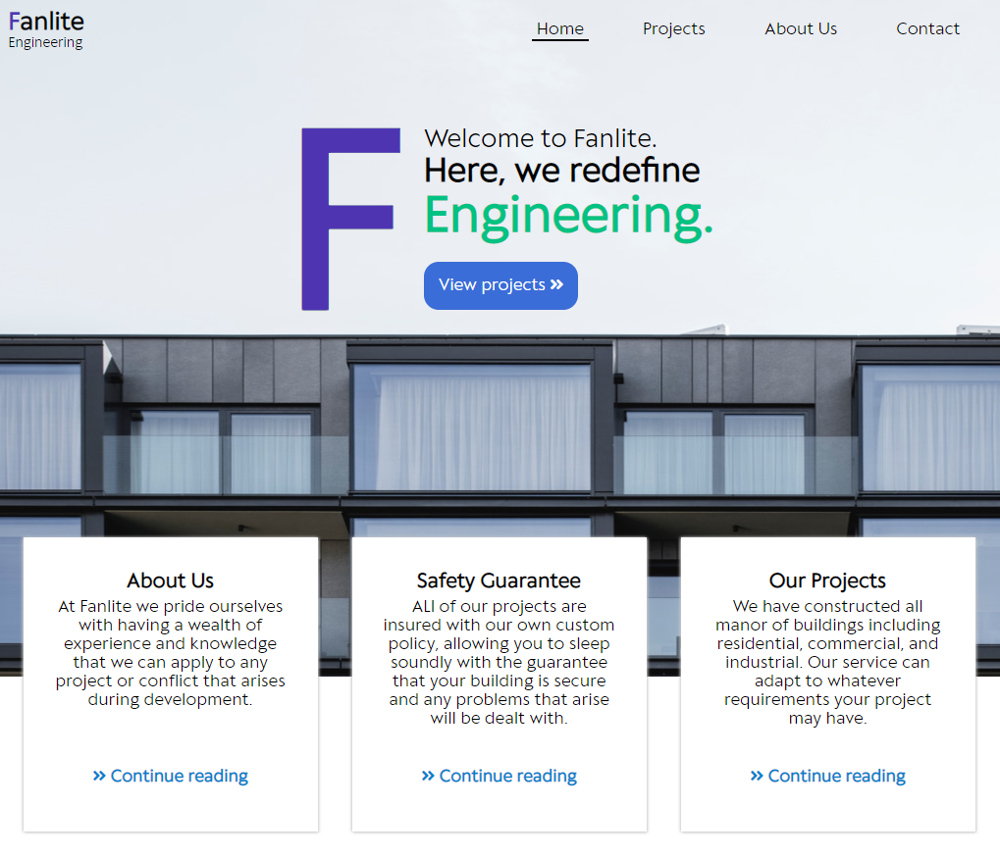
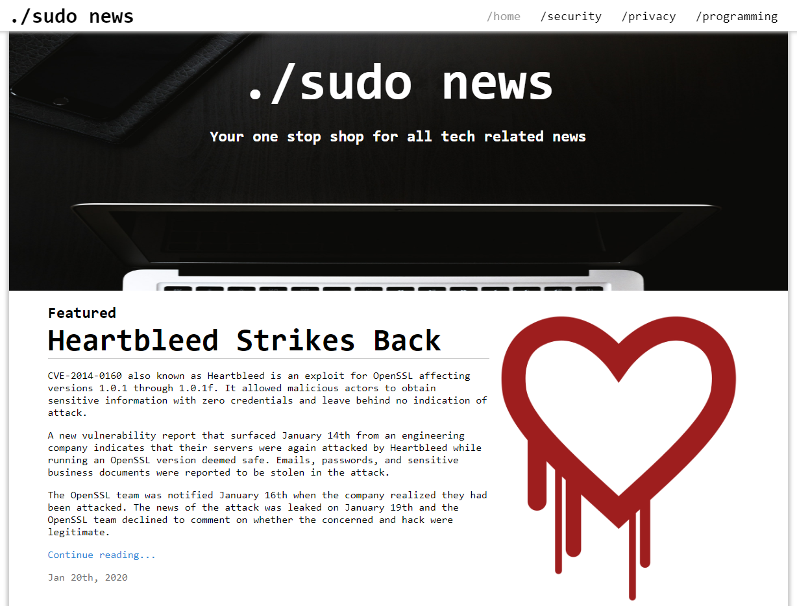

Fanlite Engineering
With a focus on clean and spacious placement of information this page is intended to allow consumption of information at a medium pace.
Its intended use case is for higher-end professional businesses that aspire for minimal or spacious aesthetics while still relaying a moderate amount of information.

sudo news
Intended as a technical news site I wanted to be sure you could quickly access article information. Due to the article related layout, this page can quickly be transformed into a personal blog.
The number of articles available as well as the featured content can be easily adjusted via Javascript to allow for a dynamic page.